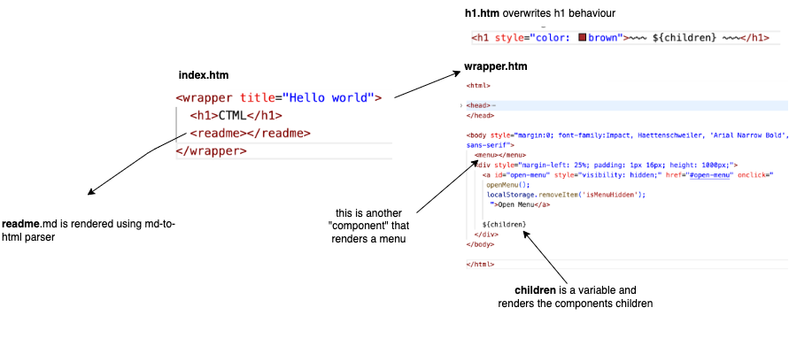

How are you doing. This is ctml. ctml stands for component-driven html and aims to simplify boilerplate and dx for edge websites.
I don't know yet exactly where I want to go with this. ctml could be component driven html with as little boilerplate as possible.
Something like mdx but i don't want to need a server. It should build to html quickly, but I want to be in control of how it looks.
What if it would support md, js, ts, json, csv, xml, all out of the box? That would be pretty cool.
Here you can see an overview:

When I was 10 years old and learned html, I always wondered why I couldn't create my own elements, or add properties.
Much later I learned React and saw that Facebook made it possible. But at what cost? JS Fatigue. JS solves all problems, but it comes at a cost: complexity.
That's why I wanted to give this a go: a more intuitive simplistic way to write full-stack apps.
I don't know if it will work, but the idea is simple: avoid javascript at all cost, write as much as possible in component-driven html, markdown, and datafiles like csv and json.
Design Goals:
Let me know if you like it. :D
${variable} syntax (like in
js) and can be passed into html tags as its attributes.